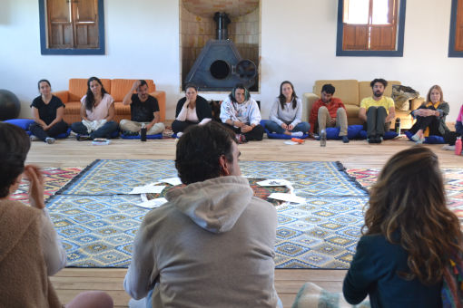
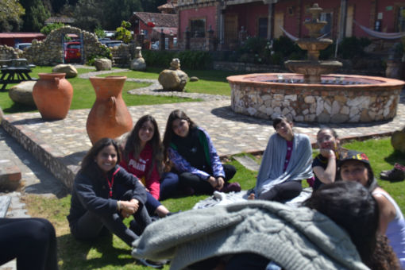

Una propuesta del realizador de La Educación Prohibida
1 encuentro - 3 días - 25 personas
una búsqueda hacia el interior de nuestra educación
Deconstruir(nos) mirandonos a los ojos
Desde el rodaje de La Educación Prohibida hasta el presente, venimos descubriendo cada vez más, que el punto de partida para transformar la educación es la transformación de nosotros como personas.
Cada uno de nosotros puede comenzar deconstruyendo su historia educativa, e iniciando un proceso de transformación personal que parta de mirar su educación y mirarse en profundidad.
Descubrir las tonalidades posibles
El hilo conductor en este viaje serán las diferentes interpretaciones que las pedagogías tienen del rol del educador, tan opuestas como complementarias. Este marco de tonalidades posibles nos invita a observarnos para vislumbrar así, caminos posibles para nuestra transformación.
El aprendizaje es a través de la vivencia, desde el cuerpo más que desde las ideas, desde el encuentro más que la individualidad, desde lo auténtico y verdadero más allá de los relatos que nos contamos.
Una invitación a presentarnos y comenzar a conocernos desde el educador de soy, mis rasgos, características, formas de ser y estar en la relación pedagógica.
Trabajaremos las primeras 2 tonalidades del educador que soy.
Una búsqueda por los orígenes de mis formas de educar, la motivación de mi rol, los tipos de educadores que aprendí a transitar y una exploración por mis tendencias a la hora de vincularme con mis estudiantes.
Trabajaremos 3 nuevas tonalidades de mi yo educador.
Una última jornada de creación y diseño libre del tipo de educador que me gustaría ser a partir de reconocimiento de mi historia y la responsabilidad de transformar mi forma de educar.
Trabajaremos las últimas 2 tonalidades del educadore que puedo ser.

Desaprender es una experiencia de trabajo personal que vengo diseñando desde 2017 con la ayuda y colaboración de distintas personas. Me inspira el trabajo de disintos referentes de la educación, la psicoterapia, el trabajo en grupos y la transformación social.
Después de varios años de rediseño, trabajo y aplicación en mi cotidiano, en 2023 rediseñé Desaprender en lo que es su edición actual, que integra tecnicas psicoterapeuticas humanistas, métodos de pedagogías alternativas, dinámicas de trabajo grupal de movimiento, teatro y conversación, y prácticas contemplativas orientales.